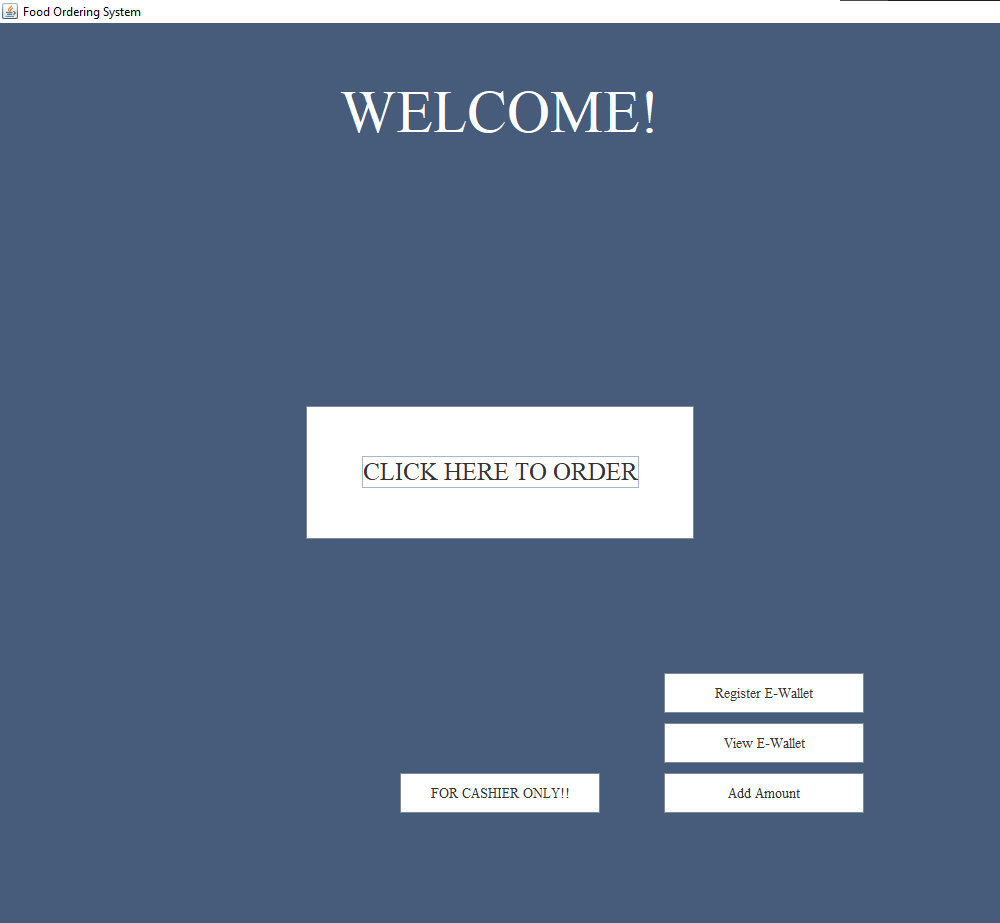
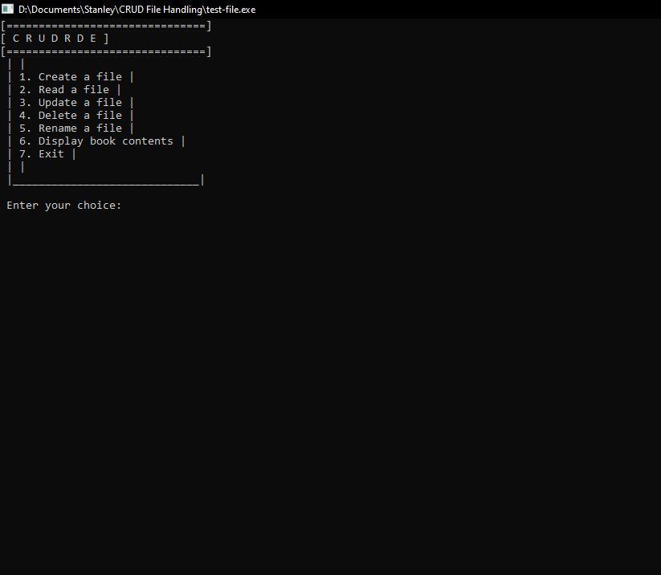
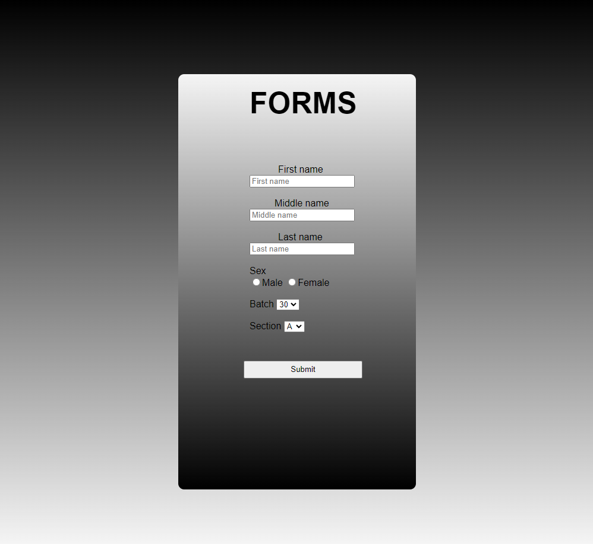
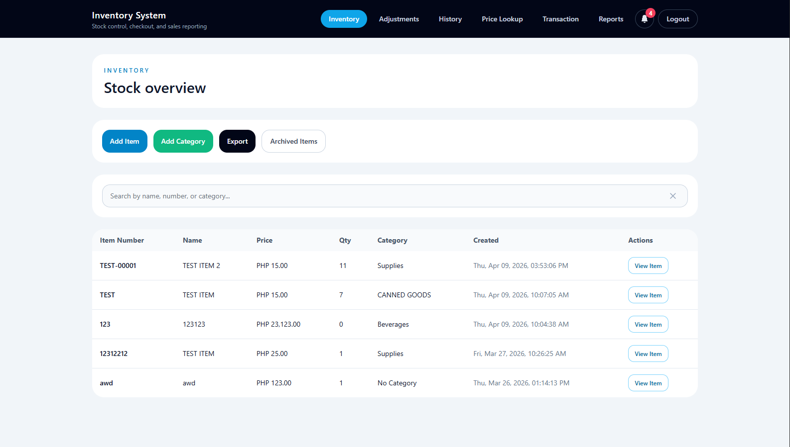

Projects
A selection of projects that reflect my interest in software development, practical problem-solving, and building useful experiences across different tools, languages, and environments.
Food Ordering System
A desktop application designed to simplify menu browsing, order placement, and payment processing while supporting smoother restaurant operations.
View source code
CRUD File Handling
A C-based file handling project that demonstrates create, read, update, and delete operations for managing structured data in a file-driven application.
View source code
Forms
A front-end form project focused on clean presentation, organized data entry, and a more engaging user experience for collecting information.
View source code
Inventory System
A web-based inventory and sales management system built to organize products, track sales activity, and support day-to-day business operations. I also used AI-assisted development to help streamline implementation and improve productivity.
View source code